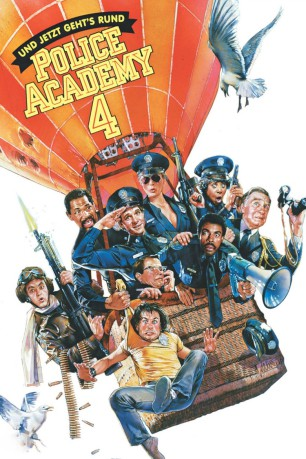

#7323 Police Academy 4 - Und jetzt geht's rund
Alternativ: Police Academy 4: Citizens on Patrol
 
 IMDB-Wertung: 4.8 / 10
IMDB-Wertung: 4.8 / 10  Metascore: 0
Metascore: 0 
Viele schöne Jobs für viele liebe Bürger, verspricht sich der mittlerweile schwer verkalkte Lassard von seiner neuesten Schnapsidee, dem Programm "Bürgerwehr". Eifrigen Rentnern, Hausfrauen und jugendlichen Halbkriminellen bietet sich so die einmalige Gelegenheit, in eine Sonderausbildung die Grundlagen moderner Verbrechensbekämpfung kennenzulernen. Ihre Ausbilder: die Chaotentruppe...
Jahr: 1987
Dauer: 87 Minuten
FSK: 6
Land: USA Studio: Warner Bros.Tonspuren:
Untertitel:
Auflösung: 720p (1280x720) Größe: 3358 MB
Genre: Komödie, Krimi
Regisseur: Jim Drake
Drehbuch: Neal Israel
Soundtrack:
Darsteller:
Datei: X:\7+mehr(A-Z)\Police Academy\Police Academy 4 - Und jetzt geht's rund (1987, FSK6, 1280x720).mkv seit 16.10.2017
Festplatte: HD Collection-7+mehr(A-Z)+Person
 Es gibt insgesamt 10 Filme in der Gruppe '7+mehr(A-Z)\Police Academy'
Es gibt insgesamt 10 Filme in der Gruppe '7+mehr(A-Z)\Police Academy'